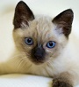

Es un gato talla mediana, de cuerpo tipo oriental (elegante, esbelto, estilizado, flexible y bien musculoso), lo cual se ha acentuado en los últimos años. El peso puede variar entre 2,5 y los 3 kg en las hembras y entre los 3,5 y los 5,5 kg en los machos.
El Siames moderno es de cuerpo esbelto y delgado aunque musculosos y fuerte. Su cuerpo culmina en una cabeza un poco más pequeña proporcionalmente, que se estructura de forma triangular, junto a las grandes y puntiagudas orejas. Esta cubierto con un manto de pelaje corto y brillante, de tipo fino y muy abundante. Esta raza se caracteriza por su pelaje bicolor en contrastes, oscuro en la cabeza, cola y extremidades, mientras que es mucho más claro en el resto del cuerpo.
El siamés tradicional o thai es una raza de gato proveniente de Tailandia y equivalente al gato siamés antiguo. Es una de las razas de gatos más antiguas y conocidas. Su origen se encuentra en el sudeste asiático, concretamente en Siam, que hoy en día pertenece a Tailandia. Allí, el siamés era venerado como gato de templo.
Su inteligencia y carácter bondadoso lo convierten en el gato perfecto para una familia. Los siameses son unos mininos muy sociables y con una necesidad elevada de participación. Además, se comunican mucho y son dueños de una voz fuerte. Si algo no va con ellos, lo dirán por todo lo alto, razón por la que se les considera especialmente asertivos.
Dar click en cada imagen:
|  | Siames Tradicional |
|---|---|
| Siames Moderno |